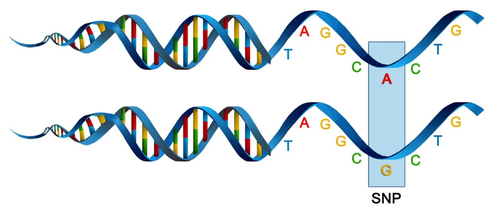
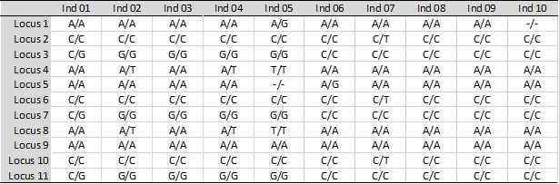
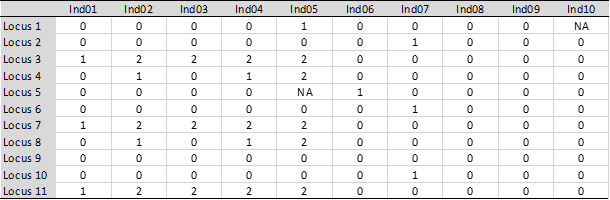

bandicoot.gl <- dartR.data::bandicoot.glDArT and dartR background
DArT
Diversity Arrays Technology (DArT) is a private company that specializes in genotyping-by-sequencing. Their approach is one of genome complexity reduction.
Sequencing
DArTSeq is a method that extracts reproducible genomic variation across the genomes of many individuals at an affordable cost. The technique digests genomic DNA using pairs of restriction enzymes (cutters) (Figure 1). When the DNA is cut at two locations within a reasonable distance of each other, the fragment is available for sequencing using the Illumina short-read platforms. Hence, the data are representational in the sense that they are generated for a random but reproducible selection of small fragments of sequence only, fragments that exhibit variation at the level of single base pairs (SNPs).
Genotyping
Sequences generated by Diversity Arrays Technology (DArT) are processed using proprietary analytical pipelines before the report (containing the SNP and SilicoDArT markers) is provided to the client and the data are passed to dartR.
Poor quality sequences are first filtered (minimum barcode Phred score 30, pass percentage 75; minimum whole-read Phred score 10, pass percentage 50). In that way, assignment of the sequences to specific samples in the sample disaggregation step is very reliable.
These sequences are truncated to 69 bp and aggregated into clusters by the DArT fast clustering algorithm.
The sequences are then error-corrected. Identical sequences are then collapsed. These error-corrected sequences are analysed using DART software (DArT GS14 pipeline) to output candidate SNP markers.
As an additional quality control, a selection of samples (30 to 100% of samples) is processed twice. These are technical replicates. Scoring consistency (reproducibility or more strictly, repeatability) is used as the main selection criterion for high quality/low error rate markers.
Where a mutation in present at a site in your genome (across your samples), this is called a Single Nucleotide Polymorphism (SNP).

dartR
The packages from dartRverse pick up the analysis at this point. The additional filtering that you may choose to undertake using dartRverse depends upon the research questions and other considerations as outlined below.

Data format
dartR used the genlight (and genind) formats from the adegenet package (Jombart and Ahmed 2011).
Basically, this object is a dataframe which has the individuals in columns and the SNPs in rows
In the image below the SNPs are coded according that nucleotide mutations (e.g. A/A for homozygous, or C/G for heterozygous)

- But to make all genetic markers comparable, they will be code:
0 = homozygous for the reference allele
1 = heterozygous
2 = homozygous for the alternate allele
NA = missing data
- The genlight object also stored the metadata of your individuals and SNPs
bandicoot.gl@pop [1] WA WA SA QLD WA WA NSW VIC WA SA SA VIC WA NSW NSW WA VIC SA VIC
[20] NSW WA WA NSW WA NSW SA WA QLD QLD QLD QLD VIC WA SA WA SA SA NSW
[39] WA WA NSW QLD NSW QLD WA NSW SA VIC WA WA SA SA WA QLD WA QLD WA
[58] WA QLD QLD VIC SA SA NSW NSW WA QLD SA WA VIC SA SA SA NSW WA NSW
[77] WA SA SA SA QLD QLD VIC NSW VIC NSW WA NSW NSW VIC WA WA QLD VIC SA
[96] NSW
Levels: NSW QLD SA VIC WAbandicoot.gl@ind.names [1] "bc1" "bc2" "bc3" "bc4" "bc5" "bc6" "bc7" "bc8" "bc9" "bc10"
[11] "bc11" "bc12" "bc13" "bc14" "bc15" "bc16" "bc17" "bc18" "bc19" "bc20"
[21] "bc21" "bc22" "bc23" "bc24" "bc25" "bc26" "bc27" "bc28" "bc29" "bc30"
[31] "bc31" "bc32" "bc33" "bc34" "bc35" "bc36" "bc37" "bc38" "bc39" "bc40"
[41] "bc41" "bc42" "bc43" "bc44" "bc45" "bc46" "bc47" "bc48" "bc49" "bc50"
[51] "bc51" "bc52" "bc53" "bc54" "bc55" "bc56" "bc57" "bc58" "bc59" "bc60"
[61] "bc61" "bc62" "bc63" "bc64" "bc65" "bc66" "bc67" "bc68" "bc69" "bc70"
[71] "bc71" "bc72" "bc73" "bc74" "bc75" "bc76" "bc77" "bc78" "bc79" "bc80"
[81] "bc81" "bc82" "bc83" "bc84" "bc85" "bc86" "bc87" "bc88" "bc89" "bc90"
[91] "bc91" "bc92" "bc93" "bc94" "bc95" "bc96"knitr::kable(head(bandicoot.gl@other$ind.metrics))| id | pop | dartseq.run | lat | lon | state | assigned.sex | |
|---|---|---|---|---|---|---|---|
| s01-19 | s01-19 | WA | 2 | -33.25139 | 121.7433 | WA | Female |
| s34-74 | s34-74 | WA | 2 | -30.90580 | 128.1267 | WA | Male |
| s35-8 | s35-8 | SA | 2 | -37.53083 | 140.2131 | SA | Female |
| s40-15 | s40-15 | QLD | 2 | -20.01550 | 148.1810 | QLD | Male |
| s07-54 | s07-54 | WA | 2 | -30.23920 | 115.0485 | WA | Male |
| s10-33 | s10-33 | WA | 2 | -27.37594 | 118.7795 | WA | Female |
bandicoot.gl@n.loc[1] 1000knitr::kable(head(bandicoot.gl@other$loc.metrics))| AlleleID | AlleleSequence | SNP | SnpPosition | CallRate | OneRatioRef | OneRatioSnp | FreqHomRef | FreqHomSnp | FreqHets | PICRef | PICSnp | AvgPIC | AvgCountRef | AvgCountSnp | RatioAvgCountRefAvgCountSnp | RepAvg | clone | uid | avgPIC | monomorphs | maf | OneRatio | PIC | verbose |
|---|---|---|---|---|---|---|---|---|---|---|---|---|---|---|---|---|---|---|---|---|---|---|---|---|
| 17678493|F|0-6:C>T-6:C>T | TGCAGGTGGCGCCAAACCGCTGCGCCACCGGGGCTGCCCTATCAGCACAATTTTAGAACATGAGATCGG | 6:C>T | 6 | 1 | 0.98 | 0.23 | 0.77 | 0.02 | 0.21 | 0.0392 | 0.3542 | 0.190781 | 26.82243 | 11.79070 | 2.27488 | 1.000000 | 17678493 | 17678493-6 | 0.1967 | NA | NA | NA | NA | NA |
| 10722863|F|0-8:G>A-8:G>A | TGCAGGTCATCTTGAAGACCAGGAGAGCTGGACGTGTGTGTGACCAGGATCACATGAGATCGGAAGAGC | 8:G>A | 8 | 1 | 0.84 | 0.59 | 0.41 | 0.16 | 0.43 | 0.2688 | 0.4838 | 0.382139 | 34.87222 | 28.58915 | 1.21977 | 0.997159 | 10722863 | 10722863-8 | 0.3763 | NA | NA | NA | NA | NA |
| 10723768|F|0-35:C>T-35:C>T | TGCAGTGATAGCTAACTGATACACACCACTATGCCTCAAGGCAAGCATGAGATCGGAAGAGCGGTTCAG | 35:C>T | 35 | 1 | 0.93 | 0.53 | 0.47 | 0.07 | 0.46 | 0.1302 | 0.4982 | 0.322650 | 51.34536 | 32.91228 | 1.56007 | 0.985795 | 10723768 | 10723768-35 | 0.3142 | NA | NA | NA | NA | NA |
| 10729717|F|0-18:G>A-18:G>A | TGCAGGTGGCACTAAACCACTGCGCCACTGGGGCTGCCCAAATTACATGAGATCGGAAGAGCGGTTCAG | 18:G>A | 18 | 1 | 0.94 | 0.47 | 0.53 | 0.06 | 0.41 | 0.1128 | 0.4982 | 0.314805 | 30.21939 | 25.14019 | 1.20204 | 0.988636 | 10729717 | 10729717-18 | 0.3055 | NA | NA | NA | NA | NA |
| 10724389|F|0-18:T>C-18:T>C | TGCAGTTTGACTTGACCTCAGGCTGTTCCGATACACATGAGATCGGAAGAGCGGTTCAGCAGGAATGCC | 18:T>C | 18 | 1 | 0.95 | 0.37 | 0.63 | 0.05 | 0.32 | 0.0950 | 0.4662 | 0.263757 | 52.99038 | 34.82895 | 1.52145 | 1.000000 | 10724389 | 10724389-18 | 0.2806 | NA | NA | NA | NA | NA |
| 10730073|F|0-8:T>C-8:T>C | TGCAGTTACGCAGGATAAAGGGAAAAACAAGACAGCTCCAGAAATGTAACATGAGATCGGAAGAGCGGT | 8:T>C | 8 | 1 | 0.98 | 0.30 | 0.70 | 0.02 | 0.28 | 0.0392 | 0.4200 | 0.217058 | 44.84834 | 31.42593 | 1.42711 | 1.000000 | 10730073 | 10730073-8 | 0.2296 | NA | NA | NA | NA | NA |